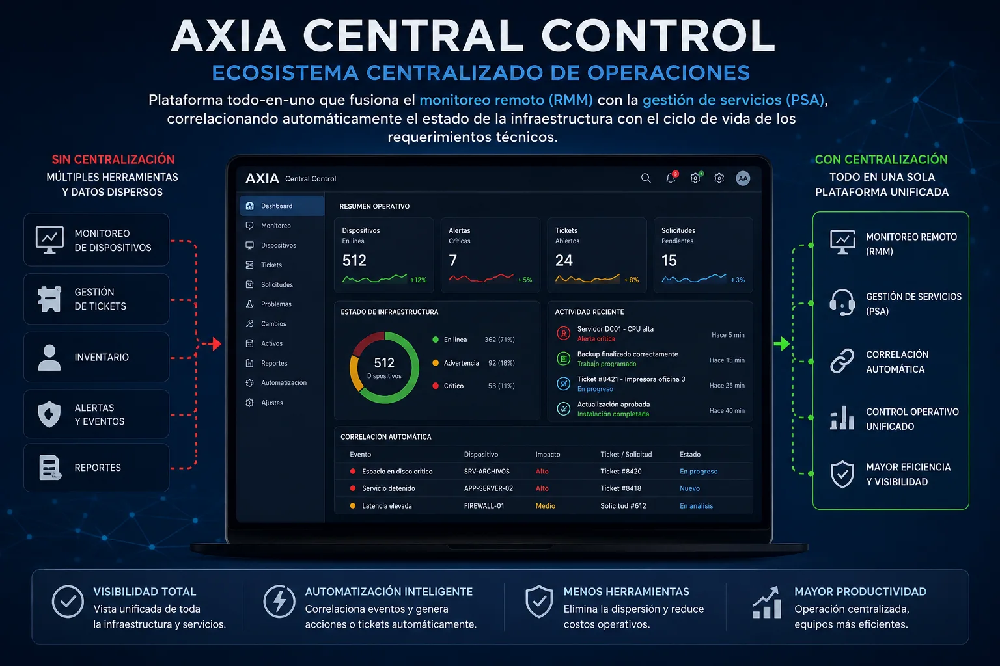

AXIA Central Control
Ecosistema Centralizado de Operaciones:
Solución todo-en-uno para RMM y PSA Una plataforma unificada que fusiona el monitoreo remoto con la gestión de servicios. Permite correlacionar de manera automática el estado de la infraestructura con el ciclo de vida de los requerimientos técnicos, eliminando la dispersión de herramientas y consolidando el control operativo en una sola pantalla.